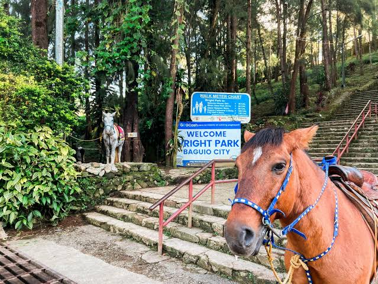

About Wright Park
Wright Park is a family-friendly spot famous for horseback riding along the famous “stairway to heaven” and relaxing among pine trees. It sits beside The Mansion and is a quick stroll from the city’s main attractions.
Nearby Spots
- 🏛️ The Mansion
- 🌲 Burnham Park
- 📸 Garden Club of Baguio
- 🍽️ Local cafés along Romulo Drive
Map Location
See the location of Wright Park near The Mansion and the eastern Baguio park corridors.